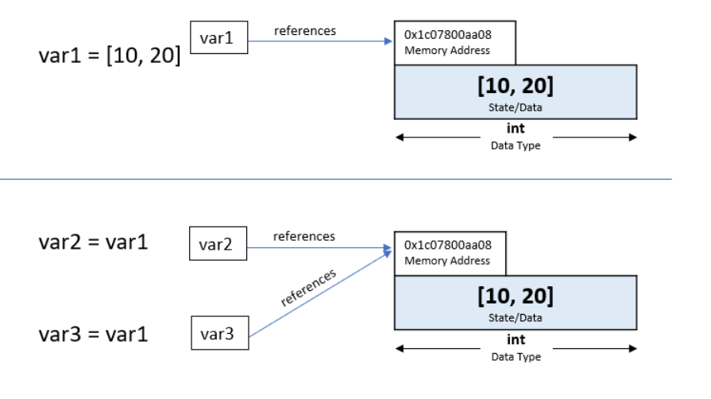

Liste
U programiranju često postoji potreba da se u jednoj promenljivoj čuva više vrednosti koje međusobno imaju neki prirodan redosled — na primer, spisak brojeva, imena studenata, rezultati merenja ili niz unetih podataka. Umesto da za svaku vrednost koristimo posebnu promenljivu, Pajton nudi praktičnu strukturu podataka koja omogućava da se više elemenata čuva, menja i obrađuje na jednom mestu. Ta struktura podataka naziva se lista.
Važno
Lista je uređena i promenljiva kolekcija podataka u Pajtonu.
Elementi su indeksirani od nule, mogu biti različitih tipova, a lista se zapisuje u uglastim zagradama [].
Primer 1.
a = [10, 20, 30]
Promenljiva a bila je lista celih brojeva.
Lista može biti sastavljena od proizvoljnih tipova podataka, sastavljena i od mešovitih tipova podataka, nemamo nikakvih ograničenja. Element liste može biti i liste.
b = ["operaciona istraživanja", "EKOF", "OI"]
c = ['niz', 34, 23.0, [1,2,'tri']]
d = [] # lista može biti i prazna
Izdvajanje elemenata liste
Slično kao i kod stringova, možemo pristupiti svakom elementu liste. Komandom b[1] pristupamo elementu liste b sa indeksom 1. Ne zaboravite da u Pajtonu indeksiranje uvek krećemo od nule!
Pristupanje nepostojećim elementima dovodi do greške.
a = [10, 20, 30]
a[5]
---------------------------------------------------------------------------
IndexError Traceback (most recent call last)
Cell In[2], line 2
1 a = [10, 20, 30]
----> 2 a[5]
IndexError: list index out of range
Preko indeksa pristupamo elementu liste. Moguća je i dvostruka indeksacija ako to elementi liste dozvoljavaju
# Setite se, b = ["operaciona istraživanja", "EKOF", "OI"]
b[0][5]
'c'
#Podsetimo se, c = ['niz', 34, 23.0, [1,2,'tri']]
c[3][2]
'tri'
Naravno, kada ako je element liste broj (int ili float svejedno) interpreter će ukazati da ne možemo da radimo dvostruku indeksaciju
#Podsetimo se, c = ['niz', 34, 23.0, [1,2,'tri']]
c[1][1]
# isto i c[2][1]
---------------------------------------------------------------------------
TypeError Traceback (most recent call last)
Cell In[8], line 3
1 #Podsetimo se, c = ['niz', 34, 23.0, [1,2,'tri']]
----> 3 c[1][1]
TypeError: 'int' object is not subscriptable
Negativni indeksi
Sve osobine indeksiranja koje smo naučili kod stringova važe i ovde
Pomoću indeksa -1 možemo da pristupimo poslednjem elementu liste
c = ['niz', 34, 23.0, [1,2,'tri']]
c[-1]
[1, 2, 'tri']
Isecanje (slajsing) liste
I ova osobina indeksiranja se može koristiti i biće nam itekako korisna
c[0:2] # Ne zaboravite da poslednji indeks nije uključen, ovo će dati indekse 0 i 1
['niz', 34]
c[:-1] # Svi elementi osim poslednjeg
['niz', 34, 23.0]
Funkcija len()
Funkcija len() vraća broj elemenata u listi. Koristi se da se odredi dužina liste, odnosno koliko se stavki u njoj nalazi.
lista = [1, 4, 9, 16, 25, 36, 49]
len(lista)
7
Nadovezivanje lista
Operator + funkcioniše tako što jednu listu nalepi na drugu
lista + [64, 81]
[1, 4, 9, 16, 25, 36, 49, 64, 81]
Logičke promenljive i liste
Često nas može interesovati da li je neki objekat element liste ili nije. Operatori in i not in služe za tu proveru. Rezultat operatora je logička promenljiva kao rezultat upita.
lista_stringova = ['abc', 'efg', 'hij']
print(9 in lista_stringova)
False
'h' in lista_stringova
False
'h' in lista_stringova[2]
True
Osnovne metode klase list
Metod je funkcija koja je vezana za određeni objekat. Poziva se preko tačke (.) i ima pristup podacima objekta nad kojim se izvršava.
Sintaksa metoda:
objekat.metod(argumenti)
Metod uvek „zna” na kom se objektu primenjuje. Razlikuje se od obične funkcije time što pripada nekom tipu podataka (npr. string, lista, rečnik…).
lista = [1, 4, 9, 16, 25, 36, 49, 64, 81]
print(len(lista)) # Funkcija len, vraća broj elemenata liste
print(lista.index(16)) # Metoda index pripada klasi lista, ima pristup podacima liste, vraća indeks vrednosti 16.
9
3
Setite se da sa znakom pitanja na kraju imena funkcije možemo dobiti kompletan opis funkcije:
lista.index?
Signature: lista.index(value, start=0, stop=9223372036854775807, /)
Docstring:
Return first index of value.
Raises ValueError if the value is not present.
Type: builtin_function_or_method
Metoda index()
Pozivom ove metode dobijamo indeks nekog elementa u listi. Ako ta vrednost ne postoji, interpreter vraća grešku. Ako postoji više pojavljivanja, metoda vraća najmanji indeks.
print(lista)
lista.index(25)
[1, 4, 9, 16, 25, 36, 49, 64, 81]
4
Metoda append()
Ova metoda upisuje novi element na kraj liste.
# Želimo da dodamo novi element na kraj naše liste
lista = [1, 4, 9, 16, 25, 36, 49]
lista.append(64)
lista
[1, 4, 9, 16, 25, 36, 49, 64]
Metoda insert()
Može se desiti da želimo da unesemo element na specifično mesto u listu. To se postiže metodom insert. Argumenti za poziv metode insert su redom:
Indeks na čije mesto se unosi novi element
Vrednost koja se unosi
Kad god niste sigurni, iskoristite funkciju help. Sa help(lista.insert) dobijamo detaljno obrazloženje kako pozvati ispravno tu metodu.
help(lista.insert)
Help on built-in function insert:
insert(index, object, /) method of builtins.list instance
Insert object before index.
# Želimo da umetnemo na poziciji sa indeksom 2 novi element
lista = [1, 4, 16, 25, 36, 49]
lista.insert(2,9)
lista
[1, 4, 9, 16, 25, 36, 49]
Metod pop()
Ova metoda uklanja iz liste njen poslednji element.
a = ['tigar', 'macka', 'lav', 'jaguar']
a.pop()
lista.pop()
a
['tigar', 'macka', 'lav']
Metod remove()
Ova metoda uklanja iz liste element čiju vrednost navodimo kao argument metode.
a = ['tigar', 'macka', 'lav', 'jaguar']
a.remove('macka')
a
['tigar', 'lav', 'jaguar']
Metod sort()
Ova metoda sortira elemente liste u rastućem nizu.
a = ['tigar', 'macka', 'lav', 'jaguar']
a.sort()
a
['jaguar', 'lav', 'macka', 'tigar']
c = [2, 5, 2.3, 67, 1]
c.sort()
c
[1, 2, 2.3, 5, 67]
Ako želimo da redosled bude u opadajućem u argumente ćemo staviti reverse = True (o ovoj metodi govorićemo i kasnije),
c.sort(reverse = True)
c
[67, 5, 2.3, 2, 1]
Osobine listi
Podsetimo se jedne važne osobine stringova. Rekli smo, da ovakva izmena nije dozvoljena i stringove smo nazvali nemutabilnim.
word = 'Python'
word[0] = 'J'
word[2:] = 'py'
Za razliku od stringova, liste su mutabilne i ovakve promene elemenata su dozvoljene. Mutabilnost dozvoljava menjanje memorijskog prostora.
primer_liste = ['a','b','c','d','e','f']
primer_liste[3] = 'w'
primer_liste
['a', 'b', 'c', 'w', 'e', 'f']
Naredba del
Ako želimo da obrišemo element liste ili više elemenata u listi, a znamo indeks ili indekse koristimo naredbu del. Primetite da se del malo drugačije poziva jer nije metod listi.
a = [-1, 1, 66.25, 333, 333, 1234.5]
del a[0]
a
[1, 66.25, 333, 333, 1234.5]
Brisanje van opsega neće javiti grešku:
del a[2:4]
a
[1, 66.25, 1234.5]
Možemo obrisati i celu listu:
del a[:]
print(a, type(a))
[] <class 'list'>
Referenciranje listi vs referenciranje stringova i brojeva
Ovo se može smatrati naprednim komentarom u ovom trenutku. Ipak, veoma je važno da razumete ovaj koncept kako biste kasnije izbegli ozbiljnije greške.
Pogledajte sledeći kod i pokušajte da razmislite šta će biti njegov izlaz:
b1 = 4
b2 = b1
b1 = 5
print(b1,b2)
Odgovor:
5 4
Pogledajte sada sličan kod u kontekstu stringova i pokušajte da razmislite šta će biti njegov izlaz:
x = "abc"
y = x
x = "def"
print("Promenljiva x je", x)
print("Promenljiva y je", y)
Odgovor:
Promenljiva x je def
Promenljiva y je abc
Međutim, sličan kod u kontekstu listi daće pomalo neočekivan odgovor:
prva_lista = [0, 1, 2, 3, 4, 5]
druga_lista = prva_lista
druga_lista[2] = 7
print("Naša prva lista je: ", prva_lista)
print("Naša druga lista je: ", druga_lista)
Naša prva lista je: [0, 1, 7, 3, 4, 5]
Naša druga lista je: [0, 1, 7, 3, 4, 5]
Šta se dešava kada dodelimo jednu listu drugoj?
Kada jednoj promenljivoj dodeliš drugu listu, ne pravi se nova lista. Obe promenljive počinju da pokazuju na isti objekat u memoriji.
{kind=link}

Slika 5. Dodeljena lista deli isti memorijski prostor
U informaciju sa slike se možemo uveriti i sami:
var1 = [10, 20]
var2 = var1
var3 = var1
print("Adrese listi: ", id(var1), id(var2), id(var3))
Adrese listi: 2474516399168 2474516399168 2474516399168
Metoda copy()
Sada se postavlja prirodno pitanje: Da li mogu da kreiram novu listu sa istim elementima sa kojom mogu da manipulišem bez menjanja originalne liste? Naravno, postoji metoda koja to rešava :
prva_lista = [0, 1, 2, 3, 4, 5]
druga_lista = prva_lista.copy()
druga_lista[2] = 7
print("Naša prva lista je: ", prva_lista, "sa adresom ", id(prva_lista))
print("Naša druga lista je: ", druga_lista, "sa adresom ", id(druga_lista))
Naša prva lista je: [0, 1, 2, 3, 4, 5] sa adresom 1298629624192
Naša druga lista je: [0, 1, 7, 3, 4, 5] sa adresom 1298629627648
Još malo o vezi stringova i listi
Podaci koje dobijemo često će inicijalno u Pajtonu biti uvezeni kao string. Lista omogućava lakše baratanje - npr., lakše je baratati pasusom teksta koji je predstavljen kao lista reči nego jedan string u kojem nemamo nikakve preciznije informacije. Jako korisno će biti da tekst koji imamo u stringu prevedemo u listu. Očekivano, postoji metoda koja to radi:
Metoda split()
Metoda za stringove koja pretvara string u listu reči:
str1 = 'Naša prva rečenica za tekstualnu analizu.'
lista1 = str1.split()
lista1
['Naša', 'prva', 'rečenica', 'za', 'tekstualnu', 'analizu.']
Vrlo često su Pajton objekti uvezeni kao string, gde ih ne razdvaja razmak, već neki drugi znak, često zarez ili tačka zarez (kao kod cls datoteka iz eksela). Pajton primarno pretpostavlja da je razmak ono što razdvaja reči. Ako želimo da ih na neki drugi način razdvojimo koristimo argument sep unutar poziva metode:
str2 = 'jedan;dva;tri'
lista2 = str2.split(sep = ';')
lista2
Često se split koristi da se duži tekst (kojeg uglavnom povučemo iz nekog drugog fajla) učita linija po linija u listu, za dalju analizu
pasus = """ It was a strange sight had there been anything but the buzzards to see
it. Side by side on the narrow shawl knelt the two wanderers, the little
prattling child and the reckless, hardened adventurer. Her chubby face,
and his haggard, angular visage were both turned up to the cloudless
heaven in heartfelt entreaty to that dread being with whom they were
face to face, while the two voices--the one thin and clear, the other
deep and harsh--united in the entreaty for mercy and forgiveness."""
lista = pasus.split("\n") # primetite da nije ni neophodno da napišemo .split(sep = "\n")
lista
Istraži
Metod split ima još jedan ugrađen parametar. Pokušajte da pomoću poziva help funkcije (ili interneta) razumete šta tim parametrom možete da postignete
Zadaci i problemi
Zadatak 1
Formirajte listu koja sadrži sledeće brojeve:
4, 7, 2, 9, 5
Ispišite celu listu.
Ispišite prvi element liste.
Ispišite poslednji element liste.
Zadatak 2
Data je lista
[12, 15, 8, 6, 21]
Ispišite treći element liste.
Promenite vrednost drugog elementa tako da bude 20.
Ponovo ispišite celu listu.
Zadatak 3
Formirajte praznu listu.
Dodajte u listu sledeće brojeve:
3, 6, 9, 12.Ispišite listu.
Koliko elemenata ima lista?
Zadatak 4
Data je lista
[5, 10, 15, 20, 25]
Ispišite prva tri elementa liste.
Ispišite poslednja dva elementa liste.
Zadatak 2
Data je lista
[12, 15, 8, 6, 21]
Ispišite treći element liste.
Promenite vrednost drugog elementa tako da bude 20.
Ponovo ispišite celu listu.
Zadatak 5
Koristeći indekse i listu lista, u string s1 upišite vrednost "MDS".
lista = [10, [3, 4], [5, [100, 200, ["MDS"]], 23, 11], 1, 7]